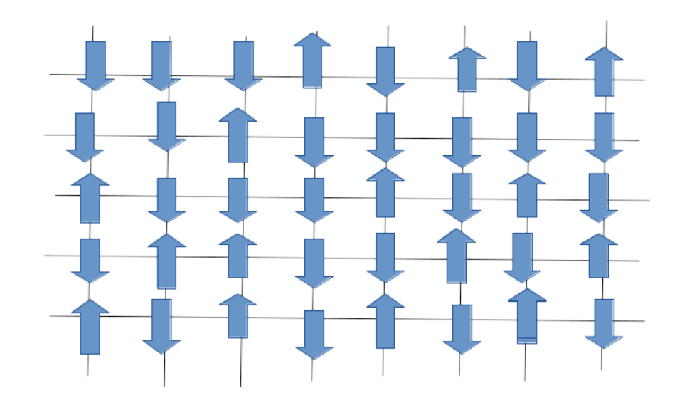
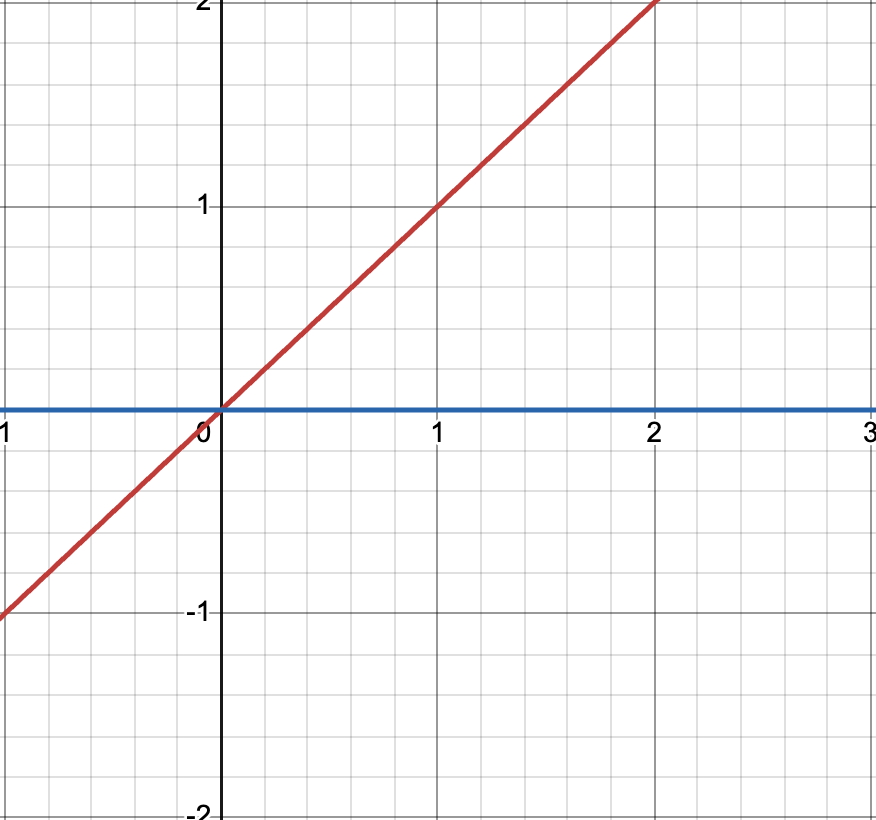
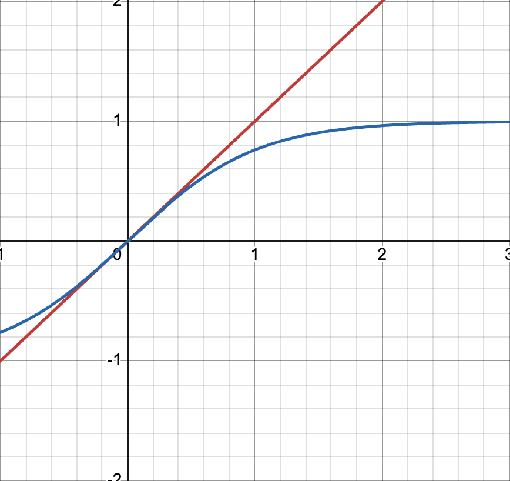
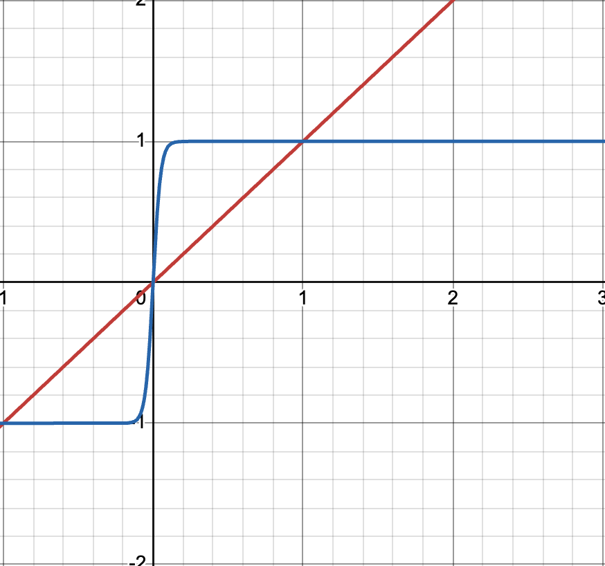
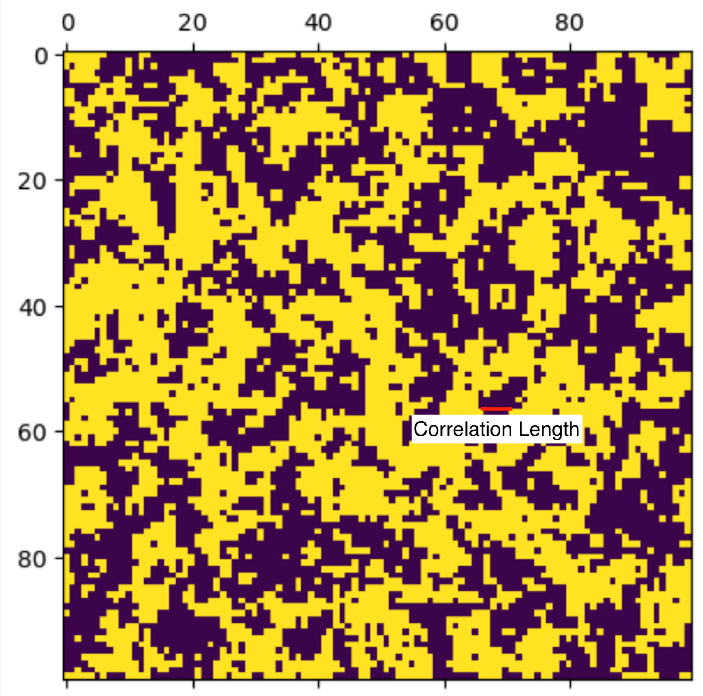

Theory
Describing the model
Consider some lattice of atoms. In this lab, the main focus is on a square lattice in two dimensions.
It is assumed that each atom has a magnetic moment, or spin, of either up or down. More detailed models allow the atoms to be in “superpositions” of these two choices, but here it is assumed that they are one or the other. This spin is denoted
\[\sigma_i = \pm 1\]
where spin up is \(+1\) and spin down is \(-1\).

The energy of the system can be represented using the Hamiltonian, usually defined as the sum of the potential and kinetic energy. Here, the energy depends on external fields, denoted \(B\), and also the nearest neighbour atomic spins. The latter is a result of it being energetically favourable for a spin to align with its neighbours. Thus, the Hamiltonian for the system can be defined as
\[ H=-\sum_{i,j}J \sigma_i \sigma_j - \sum_i B \sigma_i \]
The constant \(J\) represents the exchange energy, which is essentially the energy required to “flip” a spin. The minus sign in front of the first sum is to ensure that it is favourable for nearby spins to be aligned.
Principles of Statistical Physics
If we consider systems at fixed temperatures, then we can use the Boltzmann law to determine what the probability of each microstate is
\[ p = \frac 1Z \exp \bigg (-\frac{H}{k_BT}\bigg) \]
where \(H\) is the Hamiltonian described above, defining the energy of that microstate.
A microstate, as opposed to a macrostate, is a specific arrangement of all the particles in a system at a point in time. A macrostate, on the other hand, uses few properties to describe the state of the whole system, for example temperature or pressure. A single macrostate can correspond to many different microstates.
In our case, a microstate will be a list of all the values of the spins of each particle.
We can use the probability of certain outcomes to determine statistical averages. For example, the average energy $U=H $ is given by
\[ U = \frac1Z \sum H \exp \bigg (-\frac{H}{k_BT}\bigg) \]
and the average value of the spin on atom \(i\) is
\[ \langle \sigma_i \rangle = \frac1Z \sum \sigma_i \exp \bigg (-\frac{H}{k_BT}\bigg ) \]
Entropy and Free Energy
The entropy of the system can be found via Shannon’s formula
\[ S = -k_B\sum p \ln p\]
where \(p\) is the probability of microstates occuring - as demonstrated above.
We can also calculate the free energy as
\[ F = U -TS\]
This is useful when we consider systems at a given temperature. F is a natural function of temperature (as well as other factors such as the magnetic field). Hence we can differentiate:
\[ dF = dU - SdT \]
and hence the entropy is found via
\[ S = \frac{\partial F}{\partial T} \]
Magnetisation
The total magnetisation of the sample is the combined sum of the spins of each particle $_i $, and so
\[ M = \frac1Z \sum \sigma_i \exp \bigg (-\frac{H}{k_BT}\bigg ) \]
For the Ising Hamiltonian here, we can write
\[ \sum_i \langle \sigma_i\rangle = \frac{\partial \langle H \rangle}{\partial B} \]
and so $ M = $, or in terms of the free energy, $M = $.
This then implies that
\[ dF = -SdT + M dB \]
Then we can consider the free energy as $F = F(T,B) $.
Important Relations
There are some simple ways to rewrite the equations above in terms of the partition function \(Z\) only.
\[ U = -\frac{\partial \ln Z}{\delta \beta} \quad \text{and} \quad F = -\frac{1}{\beta} \ln Z \]
where $= $.
Single-spin Solution
If we consider a single spin only, the Hamiltonian is trivial.
\[ H = -B\sigma \]
There are only two microstates, corresponding to \(\sigma = \pm 1\), with corresponding energies \(\pm B\). Thefore, the partition function is
\[ Z = \exp \bigg ( -B\beta \bigg) + \exp \bigg( +B\beta \bigg) \]
and the average value of the spin is
\[ \langle \sigma \rangle = \tanh B\beta \]
Mean-field Theory
Let’s return to the Hamiltonian from above
\[ H=-\sum_{i,j}J \sigma_i \sigma_j - \sum_i B \sigma_i \]
Assume that in the lattice, each spin $ _i $ experiences the effects of its neighbours as an average “effective” energy. We can then write the Hamiltonian (approximately) as
\[ H=-\sum_{i,j}J \sigma_i \langle \sigma_j \rangle - \sum_i B \sigma_i \]
We will then rearrage this as
\[ H = -\sum _i \Big (B - J\sum _{j} \langle \sigma_j \rangle \Big ) \sigma_i = -\sum_i B_{\text{eff}} \sigma_i \]
where \(j\) is a sum over the neighbours of \(i\).
Each spin is equivalent, on average, and so the neighbouring spins will all have the same average spin $_j$. If there are \(n\) neighbours, we get
\[ B_\text{eff} = B- J\sum _{j} \langle \sigma_j \rangle = B + nJ\langle \sigma_i\rangle\]
where $_i $ represents the average spin of the neighbours of spin \(i\).
Combining this with the solution for the single-spin above, we find
\[ \langle \sigma_i \rangle = \tanh \bigg ( \Big (B + nJ\langle \sigma_i \rangle\Big)\beta\bigg ) \]
which can be solved by plotting both sides and observing intersections. Consider first the case when there is no applied magnetic field.
\[ \langle \sigma_i \rangle = \tanh \bigg ( nJ\langle \sigma_i \rangle\beta\bigg ) \]
Now observe Fig. 2-4, where both sides are plotted, with \(k = nJ\beta\).



We can see there is always a trivial solution \(\langle \sigma_i\rangle= 0\). However, for \(k \gg 1\) we see two more solutions arise, one positive and one negative.
This suggests that in this case, we have some net magnetisation occurring - this is ferromagnetism! The solutions arise at \(k=1\), and hence
\[ k=1 \Rightarrow nJ\beta = 1 \Rightarrow T_c = \frac{nJ}{k_B} \]
where \(T_c\) is some critical temperature at which ferromagnetism arises in our system.
Flaws in the Mean-field Picture
In the mean-field picture, we ignore all individual spins, instead chosing to use the average magnetisation. This in turn means that spins far from each other might be less correlated than spins close to each other - the exact local configuration around a site can be very different to one far away, and indeed the global average.
At the critical temperature, these fluctuations become important.
A useful measure is called the correlation length \(\xi\). It measures the typical size of correlated regions, demonstrated in Fig. 5.

Near the critical temperature, \(\xi \to \infty\) . Because we consider finite-sized systems when simulating the Ising model, the correlation length vastly dominates over the system-length, and so we observe scale-invariance in the fluctuations. This implies that all systems (regardless of size) have similar behaviour at \(T_c\).
The Binder Cumulant
We introduce the Binder cumulant \(U_4\) to quantify “how different do distributions look?”. It is defined as
\[ U_4 = 1 - \frac{\langle D^4 \rangle}{3 \langle D^2 \rangle^2} \]
where \(\langle D^4 \rangle\) and \(\langle D^2 \rangle\) are the fourth and second moments of the distribution \(D\).
This means that there is a way to quantitavely measure how the magnetisation fluctuates over time, and compare it to systems of different sizes. As stated previously, at the critical temperature, all systems should behave similarly, and so should provide similar distributions. A “crossing-point” can be observed at \(T=T_c\) from which the critical temperature can be measured.
Finite Size Scaling; Critical Exponents
Critical exponents are used to describe second order phase transitions. They characterise the behaviour of certain variables at the critical temperature.
\[ \begin{align} M &\propto |T-T_c|^\beta\\ \chi_M &\propto |T-T_c|^{-\gamma}\\ C_V &\propto |T-T_c|^{-\alpha}\\ \xi &\propto |T-T_c|^{-\nu} \end{align} \]
These critical exponents are known for the 2D Ising Model.
\[ \alpha=0, \quad \beta=0.125, \quad \gamma=1.75, \quad \nu=1 \]
Consider the Ising model that is simulated here. The systems are not infinite in size.
As described above, the correlation length goes as
\[ \xi \propto |T-T_c|^{-\nu} \]
for any system. However, since the maximum correlation length of a square system of side \(N\) is just \(N\), there is some effective critical point at \(\xi = N\). This is reffered to as a pseudocritical point.
So, it can be said that \(\xi \propto |T_c-T|^{-\nu}\), and hence at the pseudocritical point (\(\xi=N\), with \(T=T_c(N^2)\)),
\[ N\propto \bigg (T_c(N^2) - T_c(\infty)\bigg)^{-\nu} \quad \Rightarrow \quad \bigg(T_c(N^2) - T_c(\infty)\bigg) \propto N^{-1/\nu} \]
where \(T_c(\infty)\) is the true critical point, and \(T_c(N^2)\) is the pseudocritical point in a system of area \(N^2\).
\(T_c(\infty)\) is presumed unknown, and we wish to find \(\nu\). In order to do this, the magnetic susceptibility \(\chi_M\) can be used. We can argue that the susceptibility will have a peak shifted from the critical point.
\[ \chi_{M,\text{peak}} \propto |T_c(N^2)-T_c(\infty)|^{-\gamma} \propto N^{\gamma/\nu} \]
It follows that
\[ \log \chi_{M,\text{peak}} =\frac{\gamma}{\nu}\log N \] from which \(z=\gamma/\nu\) can be found.
The Metropolis algorithm
The Metropolis algorithm is a method of flipping spins based on certain thermodynamic constraints. [1] It satisfies the detailed balance condition, ensuring that the transition probabilities between states lead to a stationary distribution equal to the Boltzmann distribution. Initially, the lattice is setup in some arbitrary configuration. Then, a spin is picked and it is proposed that its spin is flipped. If the flip reduces the energy of the system, then the move is accepted - this is physically allowed. If the flip increases the energy of the system, then it is only accepted with a probability \(e^{-\beta/\Delta E}\) - accounting for random thermodynamic fluctuations that can permit this physically.
Critical slowing down
As a system approaches its critical temperature, as discussed above, its correlation length grows to infinity, implying that the spins becomes increasingly interdependent. Consequently, the autocorrelation time i.e. the time it takes for the spins to relax to equilibrium also diverges, becoming much larger. This means that for relatively short simulations, the system simply does not have enough time to find equilibrium, causing results to not accurately reflect the results. Algorithms such as the Metopolis algorithm above flip one spin at a time, and can lead to highly correlated configurations near criticality, which require many steps to produce statistically independent samples, limiting the efficiency of the simulation. In situations whereby simply running the simulation for longer is not feasable (e.g. due to computational limitations), another solution must be found.
The Swendsen-Wang algorithm
The Swendsen-Wang algorithm provides a solution to critical slowing down. In contrast to the Metropolis algorithm, the SW algorithm flips entire “clusters” of spins simultanously, rather than individual spins. The SW algorithm has been shown to be thermodynamically identical to the Metropolis algorithm [2] (i.e. it also satisfies the detailed balance condition), which is due to the rules governing the formation of clusters in the algorithm.
In order to create the clusters, the algorithm examines neighbouring spins. If two adjacent spins are aligned, then a “bond” is placed between them with a probability that depends on the temperature and the interaction strength (\(J\)). In the case of the Ising model, the probability of bond formation is
\[1-e^{-2J / k_BT}\]
This process essentially clusters groups of correlated spins. Once this cluster is formed, it can be assigned a new spin value, for which every spin in the cluster is given - essentially flipping the whole cluster in one swoop. This means that the simualtion can make large-scale changes in a single step, efficiently reducing correlations that otherwise remain for long timescales.
Computationally, cluster formation initially costs computation to form, however, the extra cost is generally compensated for by a reduction in autocorrelation time. The SW algorithm allows simlutaions that would take many more time-steps to be run without time-extensive simulations.
[1]: Metropolis, N., Rosenbluth, A. W., Rosenbluth, M. N., Teller, A. H., Teller, E., Equation of State Calculations by Fast Computing Machines, (1953) Journal of Chemical Physics, 21(6), 1087–1092
[2]: Swendsen, R. H. and Wang, J. S., Nonuniversal Critical Dynamics in Monte Carlo Simulations, (1987) Physical Review Letters, 58(2), 86–88